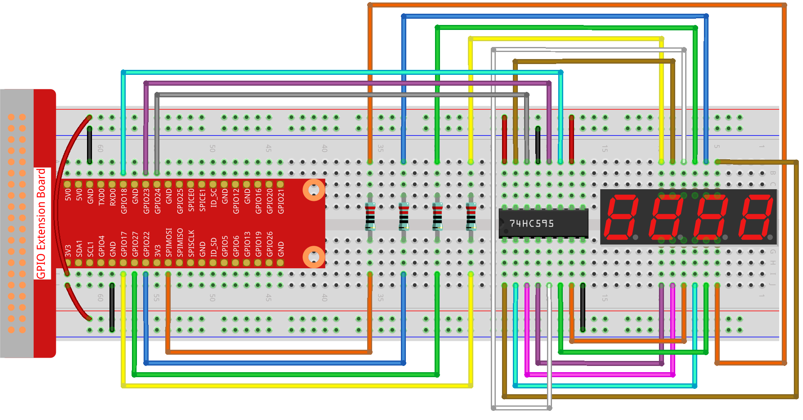

Note
Bonjour, bienvenue dans la communauté des passionnés de SunFounder Raspberry Pi, Arduino et ESP32 sur Facebook ! Plongez dans l’univers de Raspberry Pi, Arduino et ESP32 avec d’autres amateurs.
Pourquoi nous rejoindre ?
Support d’experts : Résolvez les problèmes après-vente et surmontez les défis techniques grâce à l’aide de notre communauté et de notre équipe.
Apprendre & Partager : Échangez des astuces et des tutoriels pour améliorer vos compétences.
Aperçus exclusifs : Accédez en avant-première aux annonces des nouveaux produits.
Réductions spéciales : Profitez de réductions exclusives sur nos dernières nouveautés.
Promotions festives et cadeaux : Participez à des concours et à des promotions spéciales pour les fêtes.
👉 Prêt à explorer et créer avec nous ? Cliquez sur [Ici] et rejoignez-nous dès aujourd’hui !
1.1.5 Afficheur 7 segments à 4 chiffres
Introduction
Suivez-moi pour essayer de contrôler un afficheur 7 segments à 4 chiffres.
Composants nécessaires
Dans ce projet, nous aurons besoin des composants suivants.

Schéma de câblage
T-Board Name |
physical |
BCM |
GPIO17 |
Pin 11 |
17 |
GPIO27 |
Pin 13 |
27 |
GPIO22 |
Pin 15 |
22 |
SPIMOSI |
Pin 19 |
10 |
GPIO18 |
Pin 12 |
18 |
GPIO23 |
Pin 16 |
23 |
GPIO24 |
Pin 18 |
24 |
Procédure expérimentale
Étape 1 : Montez le circuit.
Étape 2 : Accédez au dossier contenant le code.
cd ~/davinci-kit-for-raspberry-pi/python-pi5
Étape 3 : Exécutez le programme.
sudo python3 1.1.5_4-Digit.py
Après l’exécution du code, le programme effectue un comptage, augmentant de 1 par seconde, et l’afficheur à 4 chiffres affiche ce compteur.
Avertissement
Si un message d’erreur apparaît tel que RuntimeError: Cannot determine SOC peripheral base address, veuillez consulter Si gpiozero ne fonctionne pas..
Code
Note
Vous pouvez Modifier/Réinitialiser/Copier/Exécuter/Arrêter le code ci-dessous. Mais avant cela, vous devez accéder au chemin source du code comme davinci-kit-for-raspberry-pi/python-pi5. Après modification, vous pouvez l’exécuter directement pour observer le résultat.
#!/usr/bin/env python3
from gpiozero import OutputDevice
import time
import threading
# Définition des broches GPIO pour le registre à décalage 74HC595
SDI = OutputDevice(24) # Entrée de données série
RCLK = OutputDevice(23) # Horloge du registre
SRCLK = OutputDevice(18) # Horloge du registre de décalage
# Définition des broches GPIO pour la sélection des chiffres de l'afficheur 7 segments
placePin = [OutputDevice(pin) for pin in (10, 22, 27, 17)]
# Définition des codes segmentaires pour les chiffres 0-9
number = (0xc0, 0xf9, 0xa4, 0xb0, 0x99, 0x92, 0x82, 0xf8, 0x80, 0x90)
counter = 0 # Initialisation du compteur
timer1 = 0 # Initialisation du minuteur
def clearDisplay():
""" Clear the 7-segment display. """
for _ in range(8):
SDI.on()
SRCLK.on()
SRCLK.off()
RCLK.on()
RCLK.off()
def hc595_shift(data):
""" Shift a byte of data to the 74HC595 shift register. """
for i in range(8):
SDI.value = 0x80 & (data << i) # Définir SDI haut/bas selon le bit de données
SRCLK.on() # Impulsion d'horloge du registre de décalage
SRCLK.off()
RCLK.on() # Verrouille les données avec une impulsion d'horloge
RCLK.off()
def pickDigit(digit):
""" Select a digit for display on the 7-segment display. """
for pin in placePin:
pin.off() # Éteint toutes les broches de sélection
placePin[digit].on() # Active la broche du chiffre sélectionné
def timer():
""" Timer function to increment the counter every second. """
global counter, timer1
timer1 = threading.Timer(1.0, timer) # Réinitialisation du minuteur
timer1.start()
counter += 1 # Incrémente le compteur
print("%d" % counter) # Affiche la valeur actuelle du compteur
def setup():
""" Setup initial state and start the timer. """
global timer1
timer1 = threading.Timer(1.0, timer) # Initialisation du minuteur
timer1.start()
def loop():
""" Main loop to update the 7-segment display with counter value. """
global counter
while True:
for i in range(4): # Parcourt chaque chiffre
clearDisplay() # Efface l'affichage avant de définir un nouveau chiffre
pickDigit(i) # Sélectionne le chiffre à afficher
digit = (counter // (10 ** i)) % 10
hc595_shift(number[digit]) # Envoie la valeur au registre 74HC595
time.sleep(0.001) # Courte pause pour la stabilité de l'affichage
def destroy():
""" Cleanup GPIO resources and stop timer on exit. """
global timer1
timer1.cancel() # Arrête le minuteur
for device in [SDI, RCLK, SRCLK] + placePin:
device.close() # Ferme les périphériques GPIO
try:
setup() # Initialise la configuration
while True:
loop() # Démarre la boucle principale
except KeyboardInterrupt:
# Gère l'interruption du script (ex. Ctrl+C)
destroy() # Nettoie les ressources à la sortie
Explication du code
Ces quatre broches contrôlent les broches d’anode commune des quatre chiffres de l’afficheur 7 segments.
# Définition des broches GPIO pour la sélection des chiffres de l'afficheur 7 segments placePin = [OutputDevice(pin) for pin in (10, 22, 27, 17)]
Un tableau de codes segmentaires pour les chiffres de 0 à 9 en hexadécimal (anode commune).
# Définition des codes segmentaires pour les chiffres 0-9 number = (0xc0, 0xf9, 0xa4, 0xb0, 0x99, 0x92, 0x82, 0xf8, 0x80, 0x90)
Initialise un minuteur qui déclenche la fonction timer chaque seconde. Cela met en place l’incrémentation récurrente du compteur.
def setup(): """ Setup initial state and start the timer. """ global timer1 timer1 = threading.Timer(1.0, timer) # Initialisation du minuteur timer1.start()
Après chaque seconde, la fonction du minuteur est appelée ; elle incrémente le compteur et se réinitialise pour se répéter chaque seconde.
def timer(): """ Timer function to increment the counter every second. """ global counter, timer1 timer1 = threading.Timer(1.0, timer) # Réinitialisation du minuteur timer1.start() counter += 1 # Incrémente le compteur print("%d" % counter) # Affiche la valeur actuelle du compteur
Déplace un octet de données dans le registre à décalage 74HC595, contrôlant les segments de l’afficheur.
def hc595_shift(data): """ Shift a byte of data to the 74HC595 shift register. """ for i in range(8): SDI.value = 0x80 & (data << i) # Définit la valeur de SDI selon le bit de données SRCLK.on() # Impulsion de l'horloge du registre de décalage SRCLK.off() RCLK.on() # Verrouille les données sur la sortie en déclenchant l'horloge du registre RCLK.off()
Met continuellement à jour l’affichage avec la valeur actuelle du compteur, en affichant chaque chiffre successivement.
def loop(): """ Main loop to update the 7-segment display with counter value. """ global counter while True: for i in range(4): # Parcourt chaque chiffre clearDisplay() # Efface l'affichage avant de définir un nouveau chiffre pickDigit(i) # Sélectionne le chiffre à afficher digit = (counter // (10 ** i)) % 10 hc595_shift(number[digit]) # Envoie la valeur du chiffre au 74HC595 time.sleep(0.001) # Courte pause pour la stabilité de l'affichage
Efface l’afficheur 7 segments en éteignant tous les segments avant d’afficher le chiffre suivant.
def clearDisplay(): """ Clear the 7-segment display. """ for _ in range(8): SDI.on() SRCLK.on() SRCLK.off() RCLK.on() RCLK.off()
Sélectionne le chiffre de l’afficheur 7 segments à activer. Chaque chiffre est contrôlé par une broche GPIO distincte.
def pickDigit(digit): """ Select a digit for display on the 7-segment display. """ for pin in placePin: pin.off() # Éteint toutes les broches de sélection de chiffres placePin[digit].on() # Allume la broche du chiffre sélectionné
Libère correctement les ressources GPIO et arrête le minuteur lorsque le programme est interrompu.
except KeyboardInterrupt: # Gère l'interruption du script (ex. Ctrl+C) destroy() # Nettoie les ressources à la sortie